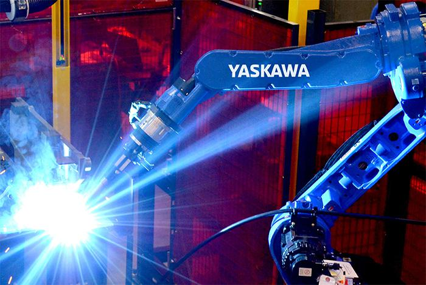
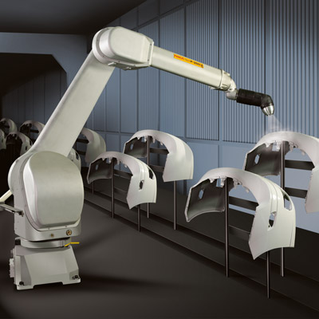
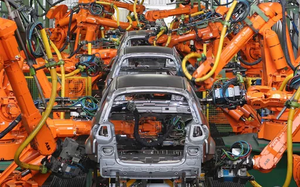
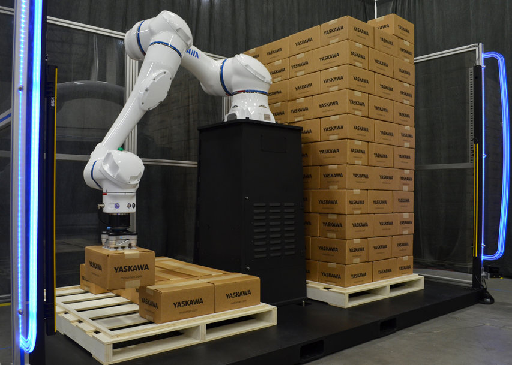

Números binários
Os números binários são um sistema numérico que utiliza apenas dois dígitos: 0 e 1. É a base do sistema de numeração binário, que é amplamente utilizado em sistemas computacionais e eletrônicos.
No sistema binário, cada dígito ou bit (abreviação de binary digit) representa um valor específico, onde 0 representa a ausência de algo e 1 representa a presença de algo.
| Binário | Decimál |
|---|---|
| 0000 | 0 |
| 0001 | 1 |
| 0010 | 2 |
| 0011 | 3 |
| 0100 | 4 |
| 0101 | 5 |
| 0110 | 6 |
| 0111 | 7 |
| 1000 | 8 |
| 1001 | 9 |
| 1010 | 10 |
A contagem binária segue as mesmas regras básicas de contagem que utilizamos no sistema decimal, mas em vez de ter 10 dígitos (0 a 9), possui apenas 2 dígitos (0 e 1).
No sistema binário, cada posição de um número binário representa uma potência de 2. A posição mais à direita é a posição 0, a próxima é a posição 1, depois a posição 2 e assim por diante. Para entender melhor, vamos dar uma olhada em um exemplo:
0: 0000
1: 0001
Quando atingimos o valor 1, não há mais dígitos à direita para aumentar, então, avançamos para a próxima posição, que é a posição 1. Agora, ao adicionar um 1 na posição 1, temos o número 2 em binário. Continuando:
2: 0010
3: 0011
E assim por diante.
Essa é a ideia básica da contagem binária. Cada posição representa uma potência de 2 e, ao adicionar um 1 nessa posição, incrementamos o valor. A contagem continua seguindo esse padrão até atingir o valor desejado.
Tipos de memória
| Tipo | Propiedade |
|---|---|
| RAM | Armazena dados temporariamente enquanto o sistema está em execução. |
| ROM | Memória não volatil. Os dados gravados são permanentes, E não podem ser alterados pelo usuário. |
| Cache | É uma memória de alta velocidade e baixa capacidade, localizada próximo ao processador. |
| Virtual | É uma extensão da memória física do computador que usa espaço em disco rígido para simular memória adicional. |
| Flash | É um tipo de memória não volátil usada para armazenamento de dados em dispositivos como pen drives, cartões de memória e unidades de estado sólido (SSDs). |
| HDD | É uma memória não volátil que armazena dados em discos magnéticos. |
| SSD | É um tipo de memória não volátil que usa chips de memória flash para armazenar dados. Os SSDs são mais rápidos e duráveis do que os HDDs tradicionais. |
Equipamentos de controle e supervisão
Abaixo esta descrito alguns dos diversos equipamentos utilizados na industria para auxiliar no controle e supervisão de uma planta industrial
| Equipamento | Função |
|---|---|
| CLPs | Dispositivos eletrônicos programáveis que controlam máquinas e processos industriais. Eles são amplamente utilizados para automatizar tarefas repetitivas e sequenciais. |
| SCADA | Esses sistemas permitem monitorar e controlar processos industriais em tempo real. Eles coletam dados de sensores e dispositivos conectados, fornecendo uma interface gráfica para os operadores visualizarem e interagirem com o sistema. |
| IHMs | São painéis de controle que permitem aos operadores interagir com os sistemas automatizados. Eles fornecem uma interface de usuário amigável para monitorar e controlar máquinas e processos. |
| DCS | São sistemas que controlam e supervisionam processos complexos e distribuídos em uma planta industrial. Eles consistem em controladores distribuídos conectados em rede que coordenam as operações de diferentes áreas. |
| CPs | São dispositivos eletrônicos que controlam variáveis de processo, como temperatura, pressão, nível e fluxo. Eles recebem informações de sensores e atuam em dispositivos de controle, ajustando as variáveis para manter o processo dentro de parâmetros desejados. |
| Redes Industriais | São sistemas de comunicação que permitem a troca de dados entre equipamentos de automação. Exemplos de redes industriais incluem Ethernet industrial, Profibus, Modbus e DeviceNet. |
| Registradores de Dados | São dispositivos utilizados para coletar e armazenar dados de processo ao longo do tempo. Eles podem ser usados para análise posterior, diagnóstico de problemas e otimização de processos. |
| Sensores e Transmissores | São dispositivos que convertem grandezas físicas, como temperatura, pressão, fluxo e nível, em sinais elétricos para monitoramento e controle. Eles fornecem dados para os sistemas de automação e supervisão. |
Robótica
|  | Robôs de Soldagem: Esses robôs industriais são projetados especificamente para executar tarefas de soldagem em diversas indústrias, como a automotiva e a metalúrgica. Eles são programados para realizar soldas precisas e repetitivas em estruturas metálicas, peças e componentes. Com alta velocidade e precisão, esses robôs contribuem para aumentar a produtividade e a qualidade do processo de soldagem. |
| Robôs de pintura: Esses robôs são amplamente utilizados em indústrias como a automobilística e a de manufatura de produtos de metal e plástico. Sua função principal é aplicar tinta, verniz ou revestimentos em superfícies de forma precisa e uniforme. Esses robôs garantem uma aplicação consistente, evitando desperdício de material e proporcionando acabamentos de alta qualidade. |  |
|  | Robôs de Montagem: Esses robôs industriais são responsáveis por realizar tarefas de montagem em linhas de produção. Eles podem ser programados para montar peças e componentes, realizar encaixes precisos, apertar parafusos, realizar soldagem por pontos, entre outras operações. Sua versatilidade e precisão os tornam essenciais na indústria automotiva, eletrônica e de produtos de consumo. |
| Robôs de paletização: Esses robôs são amplamente utilizados em indústrias de embalagens e logística. Sua função é empilhar caixas, sacos ou produtos em paletes de forma organizada e eficiente. Os robôs de paletização podem ser programados para lidar com diferentes tamanhos e formatos de produtos, aumentando a velocidade de paletização e reduzindo o esforço físico dos trabalhadores. |  |
 | Robôs de inspeção: Esses robôs são projetados para realizar inspeções de qualidade em peças, produtos acabados e estruturas em diversos setores industriais, como o de petróleo e gás, automotivo e aeroespacial. Equipados com sensores e câmeras de alta resolução, eles são capazes de detectar defeitos, medir dimensões, identificar irregularidades e realizar análises precisas. Esses robôs contribuem para garantir a qualidade dos produtos e reduzir a necessidade de inspeções manuais. |
Numero de eixos
O numero de eixo em um robo é designado pela quantidade de articulações, geralmente os robôs antropomórficos possuem 6 eixos.
Graus de liberdade
É o numerp de tipos de movimento que um corpo pode executar em um espaço, Um corpo livre no espaço pode realizar 6 tipos de movimentos independentes entee si.
Normalmento o numero de graus de liberdade iguala-se ao numero de juntas, de forma que um robô de cinco graus de liberdade possui cinco juntas.
Programação
Na área da automação industrial, alem da programação em CLP, tambem é comum o uso de microcontroladores programados em C, C++ entre outras para a prototipagem de mecânismos em teste.